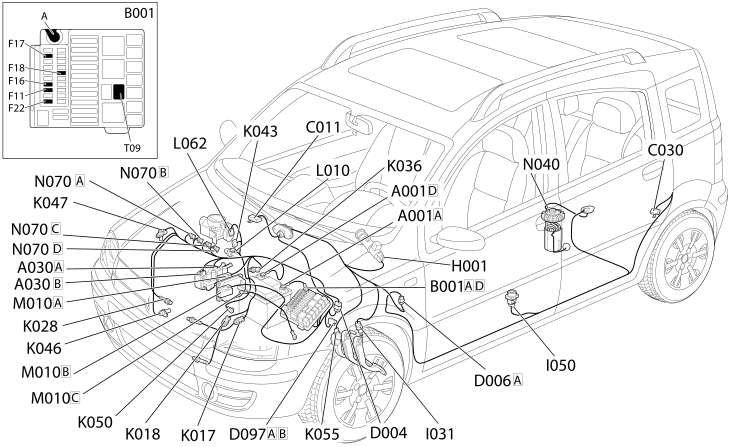

E5030 PETROL ENGINE ELECTRONIC MANAGEMENT - COMPONENT LOCATION
- Path
- Electrical equipment > 1 ELECTRICAL FUNCTIONS > E50 ENGINE CONTROL AND MANAGEMENT SYSTEMS > E5030 PETROL ENGINE ELECTRONIC MANAGEMENT > E5030 PETROL ENGINE ELECTRONIC MANAGEMENT - COMPONENT LOCATION
- Kind
- component location drawing
- Applies to
- engines: 1.2 8v; all production periods; only with equipment: POWERED THROTTLE
- Interactive page
- https://sloeber94.github.io/elrnDB-fPnd/en/#/169002438
Applies to: engines: 1.2 8v; all production periods; only with equipment: POWERED THROTTLE
Component location

COMPONENTS
Component code | Description | Reference to the assembly |
|---|---|---|
Battery | ||
Ignition coil | - | |
Ignition coil | ||
engine compartment junction unit | ||
Right front earth | - | |
Left rear earth | - | |
Injection control unit earth | - | |
Front/engine coupling | - | |
Front/rear coupling | - | |
Short circuit coupling | - | |
Ignition switch | ||
Clutch pedal switch | - | |
Inertia switch | ||
Lambda sensor on catalyzer | ||
Lambda sensor on catalyzer - 2 | ||
Engine oil pressure sensor | ||
Engine coolant temperature sensor/sender unit | ||
Integrated air temperature sensor | ||
Rpm sensor | ||
Timing sensor | ||
Detonation sensor | ||
Accelerator pedal potentiometer | ||
Accelerator pedal potentiometer | - | |
Throttle position sensor | ||
Speedometer sensor | - | |
Fuel vapour recovery solenoid valve | ||
Throttle body solenoid valve | - | |
Body computer | ||
Engine management control unit | ||
Fuel pump and level gauge | ||
Injector | ||
Idle actuator |
Topics linked from this page (41)
- 1040A fuel tank and components
- 1056B multi-point injection system (mpi)
- 1068A ACCELERATOR PEDAL CONTROL
- 1080B exhaust emission control system
- 1080E evaporation control system
- 1084A indicators/check devices
- 5505A multi-function components
- 5505C vehicle compartment wiring
- 5510C coil, ecu, sensors
- 5520A ignition switch
- 5530B battery and leads
- A001 BATTERY
- A030 IGNITION COIL
- B001 JUNCTION UNIT
- C011 RIGHT FRONT EARTH
- C030 LEFT REAR EARTH
- C060 INJECTION CONTROL UNIT EARTH
- D004 FRONT/ENGINE COUPLING
- D006 FRONT/REAR COUPLING
- D097 SHORT CIRCUITING COUPLING
- H001 IGNITION SWITCH
- I031 CLUTCH PEDAL SWITCH
- I050 INERTIA SWITCH
- K017 LAMBDA SENSOR ON CATALYZER
- K018 LAMBDA SENSOR ON CATALYZER - 2
- K028 ENGINE OIL PRESSURE SENSOR
- K036 ENGINE COOLANT TEMPERATURE SENSOR/SENDER UNIT
- K043 INTEGRATED AIR TEMPERATURE SENSOR
- K046 RPM SENSOR
- K047 TIMING SENSOR
- K050 KNOCK SENSOR
- K055 ACCELERATOR PEDAL POTENTIOMETER
- K056 THROTTLE POSITION SENSOR
- K084 SPEEDOMETER SENSOR
- L010 FUEL VAPOUR RECOVERY SOLENOID VALVE
- L062 THROTTLE BODY SOLENOID VALVE
- M001 BODY COMPUTER
- M010 ENGINE MANAGEMENT ECU
- N040 FUEL PUMP AND LEVEL GAUGE
- N070 INJECTOR
- N074 IDLE ACTUATOR